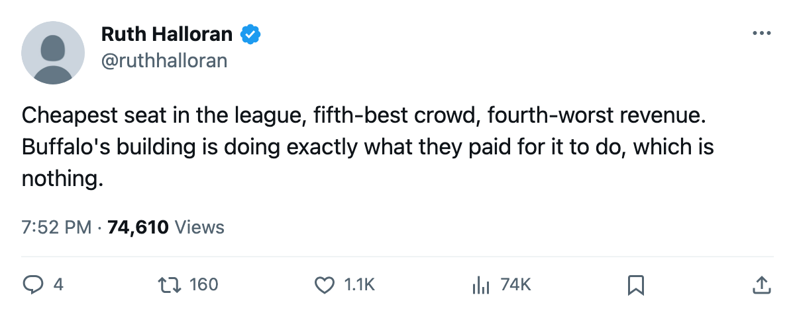

The Gate: $78 a Seat in Buffalo, and 3.0 Goals Through It
16,602 fans fill the building. $34.27M in revenue and 3.0 goals against a night is what that gate returns.
 Ruth HalloranBusiness of hockey · The Building
Ruth HalloranBusiness of hockey · The Building
Buffalo sells the cheapest ticket in the league at $78, draws 16,602 fans, and lets in 3.0 goals a night. The building is full. The register is not.
 Buffalo Sabres brought in $34.27M in revenue this season, the 4th-lowest among 30 clubs.
Buffalo Sabres brought in $34.27M in revenue this season, the 4th-lowest among 30 clubs.  New Jersey Devils drew 16,726 at $82 and cleared $45.66M on a nearly identical crowd. Dave Metzker's club sits at 3-6-2 with 14 points. At $57.39M in payroll, each Buffalo point cost $4.10M. New Jersey, at $58.50M and 19 points, runs $3.08M per point. Same bracket, one-third more hockey per dollar.
New Jersey Devils drew 16,726 at $82 and cleared $45.66M on a nearly identical crowd. Dave Metzker's club sits at 3-6-2 with 14 points. At $57.39M in payroll, each Buffalo point cost $4.10M. New Jersey, at $58.50M and 19 points, runs $3.08M per point. Same bracket, one-third more hockey per dollar.
The ticket price is the most visible difference and the one closest to a dial the front office can turn. No other club in the league sells below $79.
| Club | Attendance | Ticket | Revenue | Profit | Payroll | Pts | Per point |
|---|---|---|---|---|---|---|---|
| Buffalo Sabres | 16,602 | $78 | $34.27M | $16.87M | $57.39M | 14 | $4.10M |
| New Jersey Devils | 16,726 | $82 | $45.66M | $29.39M | $58.50M | 19 | $3.08M |
 Detroit Red Wings Detroit Red Wings | 16,019 | $83 | $49.79M | $31.74M | $63.16M | 19 | $3.32M |
 Montreal Canadiens Montreal Canadiens | 16,046 | $79 | $38.86M | $21.91M | $54.89M | 13 | $4.22M |
 Boston Bruins Boston Bruins | 15,192 | $79 | $38.11M | $20.19M | $60.32M | 20 | $3.02M |
Buffalo fills more seats than Detroit, Montreal and Boston. The revenue is lower than all three.
The building taxes every direction and rewards none
Equipment sits at Level 1, worth -4 on agility, acceleration, balance and shot accuracy. The workout rink is Level 1, worth -4 on strength, checking and endurance. The practice sheet is Level 1, worth -4 on every attribute at home. Travel is Level 2, worth -2 on the road. The live sum across the four tracks that move a rating lands at -14, one of seven clubs sitting at that mark.
The locker room is Level 1. The tuning file carries a curve between that number and morale, and nothing in this build reads it. Scouting is Level 2 and feeds only a trade valuation nobody outside the building can see. Coaching, medical, marketing and legal are switched off entirely. Four rooms do nothing. The four that do are all at Level 1 or 2, and the modifiers are negative in every case.
On the ice, averaged across the roster, the facilities term reads -2.60. Buffalo's players carry that penalty, and the front office has built nothing that offsets it.
Three men, one number
Club-average morale at Buffalo Sabres is 87.2, the 2nd-lowest in the league behind  Carolina Hurricanes at 87.1. Three Buffalo players sit on the bottom-15 list, all at 74.
Carolina Hurricanes at 87.1. Three Buffalo players sit on the bottom-15 list, all at 74.
 Martin Biron84 carries a 74 at $8.78M for five more seasons, 83 in the Book, 11 games played at 72.2 minutes a night.
Martin Biron84 carries a 74 at $8.78M for five more seasons, 83 in the Book, 11 games played at 72.2 minutes a night.  Andrew Brunette71 is 74 on $1.10M with zero years remaining and 9.8 minutes over 14 games. Francois Anderson74, the backup goaltender, is 74 at $1.43M with three years left and one game played.
Andrew Brunette71 is 74 on $1.10M with zero years remaining and 9.8 minutes over 14 games. Francois Anderson74, the backup goaltender, is 74 at $1.43M with three years left and one game played.
The payroll is $57.39M, the 16th-lowest in the league. The product on the ice is 38 goals for, 42 against, 3.0 allowed a night, and 14 points in the standings. The attendance is 5th in the league. The revenue is the 4th-worst. The profit is $16.87M, the 4th-lowest of 30 clubs.
The $78 ticket fills the building. The facilities are the problem, and every live track on the sheet says nobody has touched them.
